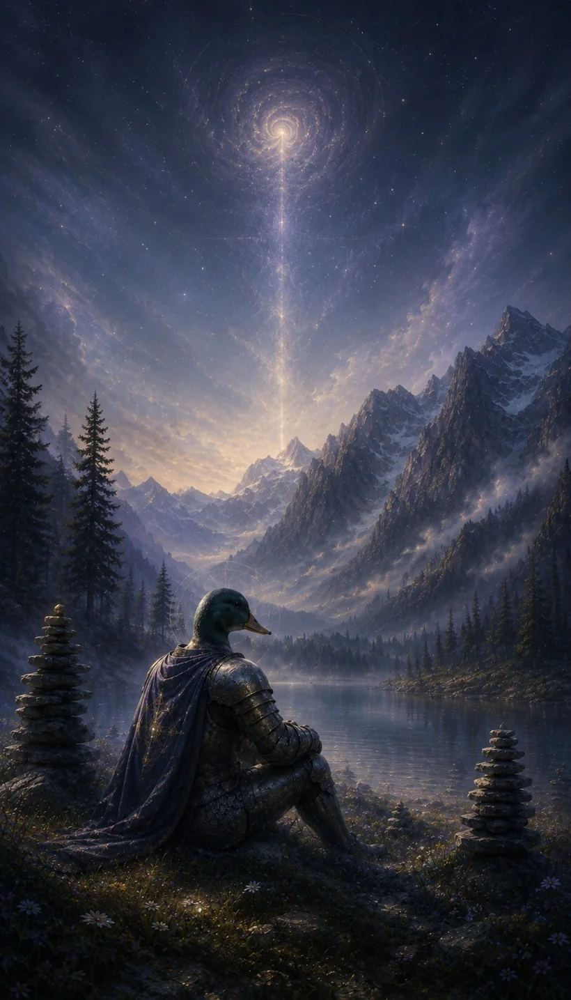

An Android game from the other side
Knights of the Astral Plane
A knight. A mountain lake.
One more throw.
The art of a
good throw.
Find a stone. Build up spin with a circular movement of your finger, then swipe to throw. Find the balance between spin, power, and curve. Then try just once more.


Beyond
the shore.
A short fantasy film featuring an armoured knight with a duck’s head, a skipping stone, and a misty mountain lake. Playback begins when the film comes into view and pauses when it leaves. Sound starts automatically where your browser allows it; otherwise use Sound on. Native video controls remain available.
Stay a little longer.
A strange little stone-skipping game for Android.
Entirely offline. No ads, accounts, or subscriptions.